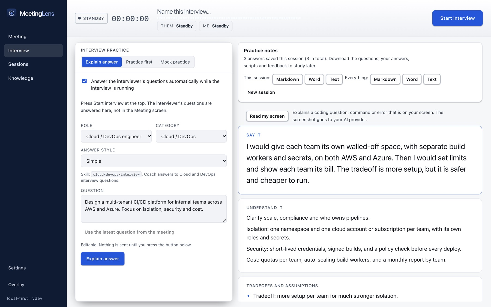

Cloud and DevOps
Rollouts, CI/CD, Kubernetes, observability, incidents, security and cost.
Interview
Interview has its own screen. Start it, and each question the interviewer asks is answered as it is asked, in the style you choose.
Answer styles
The sample question is: "Design a multi-tenant CI/CD platform for internal teams. Focus on isolation, security and cost."
Say it
I would give each team its own walled-off space with its own build workers and secrets. Then I would set limits and show each team its bill. It takes more setup, but it is safer and cheaper to run.
Say it
I would isolate each team in its own namespace and cloud account, with separate runners and secrets, so one team cannot affect another. I would add per-team quotas and cost reports to keep spending under control. The trade-off is more setup per team, which I accept for the security it buys.
Say it
One namespace and one cloud account or subscription per team, with its own roles and short-lived credentials. Build runners are ephemeral and auto-scale, builds are signed, and a policy check gates every deploy. Quotas and a monthly cost report per team cap spend. I would verify isolation with a test that one team's runner cannot read another team's secrets.
Say it
Situation: [from your notes] Task: [from your notes] Action: [from your notes] Result: [from your notes]. If your notes do not hold the facts, MeetingLens does not invent any. It tells you what to fill in from your real experience.
These are written examples to show the styles. Real answers are written live by your AI model from your question, notes and documents.
How it works
Use it for practice and preparation, and follow the rules of your interviewer or employer.

Coaching skills
Rollouts, CI/CD, Kubernetes, observability, incidents, security and cost.
Requirements, scale, data, trade-offs and failure modes.
RAG, evaluation, hallucinations, latency, cost and safety.
Approach, complexity, code and tests in Python, Java or C++.
Get a question for your role, write your own answer, then get feedback on correctness, missing points, structure and clarity. Feedback is coaching, not a hiring score.
For behavioral questions it uses only your own notes and documents. If they do not hold the facts, it asks you instead of inventing a job, date or result.
If the interviewer shows a coding problem or command, one shortcut explains it. The screenshot is sent only when you ask.